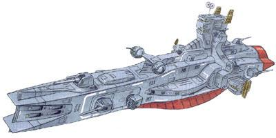
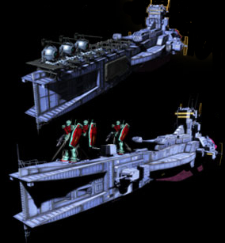
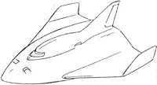
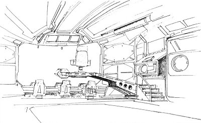

| Salamis Earth Federation Space Force Standard Cruiser |
|
|  | |
General and Technical Data |
|
|
Unit type: space-use standard cruiser Operator: Earth Federation Dimensions: overall length 288 meters; overall width 68.5 meters; overall height 61.3 meters Weight: 12100 tons Construction: Titanium alloy Propulsion: rocket engine Equipment and design features: Salamis re-entry capsule Hangar capacity: 1 infantry Launch catapults: 0 Fixed armaments: 3x fore mega particle cannon turret; 3x aft mega particle cannon turret; 6x 2-barrel 90mm antiaircraft machinegun; 2x 6-tube rocket launcher; 8x missile launcher |
|
| Technical and Historical Notes | |
|
Developed under the Earth Federation's "70's Rearmament Program" the Salamis-class cruiser forms half of the EFSF's navy along with the Magellan-class battleship.
For all intents and purposes, the Salamis is simply a scaled down Magellan. It arms six single-barreled mega particle cannons, three forward and three aft, as its main battery. Antiaircraft machineguns placed around the bridge provide cover from nosy enemy craft who may try and attack the warship's command deck. Eight large missile launchers are mounted in the forward hull for long-range attacks, and additional, smaller missile pods are also placed on rotatable servos behind the forward main guns. Propulsion is provided by a single, large rocket engine. As with most standard Federation ships, it vaguely resembles a naval warship in the general layout of its hull. A re-entry capsule is mounted on the bottom of its hull. Despite this relatively sturdy armament, the majority of the EF Space Force was caught by surprise at Lourm by the audacity and fierce fighting of Zeon's MS-06C Zaku II mobile suits. While technically superior to Zeon's Musai-class light cruisers, they are were simply not prepared to face an attack of that size and caliber with the outwardly-appearing inexperienced Zakus. In order to combat the poor performance of the Salamis-class ships at Lourm, a new breed of Salamis-class ship is in production at the EF's main shipyards. This superior ship possesses a number of improvements over the original: the initial six mega particle cannons have been upped to seven by the addition of a fourth aft turret. Three larger, double-barreled cannons are mounted around the bridge to improve their broadsiding capabilities. The original six antiaircraft machineguns have been shortened to three, with the forward pair being replaced with four high-powered laser turrets, infinitely more effective than conventional ballistics. The eight forward-mounted missile launchers have remained intact, while the six-tube missile pods have been dramatically replaced with much larger, fifteen-tube models. Four secondary engines are also mounted around the single original, giving the Salamis backup capability if the main engine is disabled, and also giving it a more bulky and armored appearance. It still equips the same re-entry capsule under its bottom. Alltogether a superior ship, EF strategists plan on having every original Salamis phased out and replaced by this new model before the end of the year.
Further, due to constraints on the Federation's limited amounts of Pegasus-class assault carriers, some Salamis-class ships are refitted to carry mobile suits. This is done via the removal of the top fore mega particle cannon and adding a magnetic landing rack, capable of seating four GM-type mobile suits or six Balls. Currently, this upgrade is only available on the older-model Salamis.
|
| Weapons and Features | |
|
Improved model Salamis "Revised"  RPG quick stats sheet RPG quick stats sheet
Armor Rating: 2.2 Speed Rating: .5 Maneuverability Rating: .5 Sensors Rating: 2 MPC Power Rating: 2.8



|
|